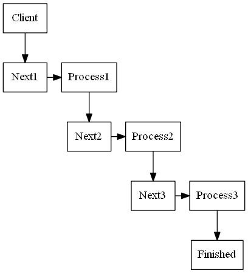
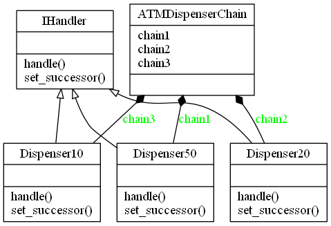

Chain of Responsibility Design Pattern
Video Lecture
Skillshare : https://skl.sh/34SM2Xg
Udemy : Chain of Responsibility Design Pattern
Description
Chain of responsibility pattern is a behavioural pattern used to achieve loose coupling in software design. In this example, a request from a client is passed to a chain of objects to process them. The objects in the chain will decide how to process them and/or pass them to the next in the chain. The objects can also modify the next in the chain if for example you wanted to run objects in a recursive manner.
Chain of Responsibility Diagram

Chain of Responsibility UML Diagram in the context of an ATM

In the ATM example, the chain is created to dispense an amount of £50, then £20s and then £10s in order. The successor chain is hard coded in the chain client.
def __init__(self): # initialize the successor chain self.chain1 = Dispenser50() self.chain2 = Dispenser20() self.chain3 = Dispenser10() # set the chain of responsibility # The Client may compose chains once or # the handler can set them dynamically at # handle time self.chain1.set_successor(self.chain2) self.chain2.set_successor(self.chain3)
You also have the option to set the next successor on logic at handle time.
Output
$ python atm.py Enter amount to withdrawal 130 Dispensing 2 £50 note Dispensing 1 £20 note Dispensing 1 £10 note Go spoil yourself
Source Code
atm.py
from abc import ABCMeta, abstractstaticmethod class IHandler(metaclass=ABCMeta): @abstractstaticmethod def set_successor(successor): """Set the next handler in the chain""" @abstractstaticmethod def handle(amount): """Handle the event""" class Dispenser50(IHandler): """ConcreteHandler Dispense £50 notes if applicable, otherwise continue to successor """ def __init__(self): self._successor = None def set_successor(self, successor): """Set the successor""" self._successor = successor def handle(self, amount): """Handle the dispensing of notes""" if amount >= 50: num = amount // 50 remainder = amount % 50 print(f"Dispensing {num} £50 note") if remainder != 0: self._successor.handle(remainder) else: self._successor.handle(amount) class Dispenser20(IHandler): """ConcreteHandler Dispense £20 notes if applicable, otherwise continue to successor """ def __init__(self): self._successor = None def set_successor(self, successor): """Set the successor""" self._successor = successor def handle(self, amount): """Handle the dispensing of notes""" if amount >= 20: num = amount // 20 remainder = amount % 20 print(f"Dispensing {num} £20 note") if remainder != 0: self._successor.handle(remainder) else: self._successor.handle(amount) class Dispenser10(IHandler): """ConcreteHandler Dispense £10 notes if applicable, otherwise continue to successor """ def __init__(self): self._successor = None def set_successor(self, successor): """Set the successor""" self._successor = successor def handle(self, amount): """Handle the dispensing of notes""" if amount >= 10: num = amount // 10 remainder = amount % 10 print(f"Dispensing {num} £10 note") if remainder != 0: self._successor.handle(remainder) else: self._successor.handle(amount) class ATMDispenserChain: # pylint: disable=too-few-public-methods """The Chain Client""" def __init__(self): # initialize the successor chain self.chain1 = Dispenser50() self.chain2 = Dispenser20() self.chain3 = Dispenser10() # set the chain of responsibility # The Client may compose chains once or # the hadler can set them dynamically at # handle time self.chain1.set_successor(self.chain2) self.chain2.set_successor(self.chain3) if __name__ == "__main__": ATM = ATMDispenserChain() AMOUNT = int(input("Enter amount to withdrawal : ")) if AMOUNT < 10 or AMOUNT % 10 != 0: print("Amount should be positive and in multiple of 10s.") exit() # process the request ATM.chain1.handle(AMOUNT) print("Now go spoil yourself")